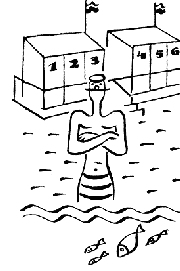
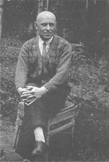
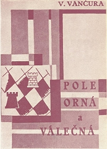
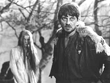
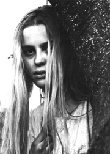
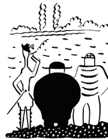

Ilustrace Josefa Čapka k Vančurově Rozmarnému létu
|
VLADISLAV VANČURA
* 23. 6. 1891 (Háj u Opavy)
† 1. 6. 1942 (Praha)
Vančurův význam spočívá především v odvážném a objevném jazykovém experimentátorství. V jeho knihách se mísí nespisovná čeština se spisovnou, klade vedle sebe knižní výrazy i nadávky, libuje si v ustálených rčeních a nechává prosté lidi promlouvat monumentálním stylem humanistických pojednání a biblickým jazykem.
Vančura byl prvním předsedou Devětsilu, ale později docházel mezi pátečníky do vily bratří Čapků. Dětství prožil v Davli. Původně chtěl být malířem, ale vystudoval lékařskou fakultu a společně se svou manželkou Ludmilou si zařídil soukromou ordinaci na Zbraslavi. Vančura vstoupil do KSČ, ale v roce 1929 byl společně s dalšími šesti spisovateli ze strany vyloučen, protože podepsali prohlášení Spisovatelé komunisté komunistickým dělníkům, ve kterém se kritizovalo nové gottwaldovské vedení. Když bylo během heydrichiády vyhlášeno stanné právo, zatklo Vladislava Vančuru za účast v ilegálním odboji gestapo a spisovatel skončil na popravišti.
|

Vladislav Vančura
|
Vančura a Devětsil
Vančura inicioval založení Devětsilu a roku 1920 se stal jeho prvním předsedou, zřejmě proto, že byl o něco starší než většina jeho členů a požíval mezi nimi velké autority. Hlavní slovo v tomto uměleckém svazu měl ale programový teoretik Karel Teige. Vančura začal publikovat poměrně pozdě. První kniha povídek Amazonský proud mu vyšla až roku 1923. Brzy ovšem následovaly další – povídky Dlouhý, Široký, Bystrozraký a první romány Pekař Jan Marhoul a Pole orná a válečná.
Ve které době se odehrává Vančurův román Pole orná a válečná?
|
Vladislav Vančura: Pekař Jan Marhoul
Hlavní postavou Vančurova prvního románu Pekař Jan Marhoul je poctivý a pracovitý pekař, který se dostane do střetu s tvrdou životní realitou a doplatí na svou dobrotu. Naivně půjčí peníze podvodníkovi a kvůli dluhům přijde o prosperující pekárnu. Najme si zchátralý mlýn, ale při jeho opravě se zraní. Nemá peníze na nájem a musí nastoupit jako zaměstnanec k jinému pekaři. Nakonec Marhoul těžce onemocní a ve strašných mukách umírá.
Román Pekař Jan Marhoul můžeme chápat jako podobenství. Hlavní hrdina je moderním mučedníkem a donkichotem zároveň.
|

Obálka Vančurovy knihy
Co ses dozvěděl/a z této ukázky o Marhoulovi?
Jak se projevila Vančurova levicovost v tomto románu?
|
Vančurův humor
Vančurovi spíše vyhovoval program proletářského umění než poetismus, jeho prózy ale mají k tomuto směru velice blízko. Především humoristická novela Rozmarné léto. Vančura odvážně experimentuje s jazykovými a slohovými prostředky, ale zároveň dokáže čtenáře zaujmout a pobavit. Jeho knihy nikdy nepostrádají svérázný humor.
|
Vladislav Vančura: Rozmarné léto
Vančurova humoristická próza Rozmarné léto se odehrává v Krokových Varech. Do ospalého maloměsta na břehu řeky Orše přibude kouzelník Arnoštek s družkou Annou, o kterou se neúspěšně ucházejí tři přátelé – abbé Roch, major Hugo a plavčík Antonín Důra. Jeho manželka Kateřina Důrová se k Arnoštkovi nastěhuje, ale nakonec se k manželovi vrací a oba kejklíři městečko opouštějí.
|
V čem má novela Rozmarné léto blízko k poetismu?
Jak Vančura dosahuje humorného vyznění.
Platí citace „Co chcete říci, mistře,“ zeptal se kanovník, „zdá se mi, že jste na své cestě za výrazem došel až k stupni nesrozumitelnosti téměř zajímavé.“ i pro dílo Vladislava Vančury?
Srovnej Vančurovu knihu s filmovou adaptací.
Myslíš si, že byl Vančura humorista?
Souhlasíš s výrokem „Smáti se znamená lépe věděti.“?
|
Vančura a 30. léta
Žeň Vančurových děl byla největší ve 30. letech 20. století, kdy se stal spisovatelem z povolání. Píše svoji nejnáročnější prózu Hrdelní pře anebo Přísloví, založenou na pozapomenutých ustálených rčeních, za kterými se původní děj zcela ztrácí. Pro děti vytvořil pohádkový příběh Kubula a Kuba Kubikula. S nostalgií se obrací do minulosti a vydává historický román Markéta Lazarová, rozverné milostné povídky Luk královny Dorotky nebo prózu Konec starých časů. Ve druhé polovině 30. let slevuje ze svých experimentů a píše klasické velké romány Tři řeky a Rodina Horvatova.
|
Vladislav Vančura: Kubula a Kuba Kubikula
Pohádka Kubula a Kuba Kubikula vypráví příběh o medvědáři Kubovi Kubikulovi a jeho medvědovi Kubulovi, kteří táhnou od města k městu. Jednou se jim zjeví strašidlo Barbucha, které je tím větší, čím více se ho někdo bojí. Když se Kuba s Kubulou dostanou do vězení, Barbucha jim pomáhá, stejně jako holčičky Lízinka a Marjánka. Vše dobře dopadne a všichni se v kraji usadí – medvěd začne chodit do školy, Kuba se stává kovářským učedníkem a Barbucha se promění v pudlíka.
|
Nakresli Kubulu, Kubu Kubikulu a Barbuchu.
Kteří výtvarníci natočili podle Vančurovy předlohy kreslené filmy?
Jak se liší Vančurova pohádka od klasických pohádkových příběhů?
Má strach velké oči?
Charakterizuj Vančurův jazyk a styl.
Vypiš z ukázky nezvyklá slova a najdi jejich význam ve slovníku.
|
Divadlo a film
Před příchodem Voskovce a Wericha psal Vančura avantgardní hry pro Osvobozené divadlo – Učitel a žák, Nemocná dívka, Alchymista, Jezero Ukereve a nedokončená Josefina. Jeho velkou láskou byl film. Konec starých časů měl být původně filmovým scénářem. Námět o moderním baronu Prášilovi se bohužel nerealizoval, a tak mu dal alespoň románovou podobu. Natočeny byly filmy Před maturitou nebo Naši furianti. Vančura se stal prvním předsedou Československé filmové společnosti. Psal také filmové a divadelní kritiky.
Řada Vančurových próz byla po jeho smrti zfilmována. Viděl/a jsi tyto filmy? Jak se ti líbily?
|
Vladislav Vančura: Markéta Lazarová
Vančurův archaizující jazyk byl jako stvořený pro knihy o dávných časech. V románu Markéta Lazarová ho velmi efektivně využil. Dva rody loupeživých rytířů – Kozlíkové z Roháčku a Lazarové z Obořiště si mezi sebou vyřizují účty. Kozlík vypálí Obořiště za to, že Lazar nechal zbít jeho syna Mikoláše. Ten unese Lazarovu dceru Markétu a oba se do sebe zamilují. Kozlíkové navíc okradou a zajmou německého šlechtice Kristiána, který se postupně sblíží s Mikolášovou sestrou Alexandrou. Kristiánův otec spolu s královským vojskem syna osvobodí. Mikuláš končí na popravišti. Kateřina zavraždí šíleného Kristiána a raději spáchá sebevraždu. Markéta se musí sama postarat o její i svoje dítě.
Podklady pro Vančurův román sebral jeho strýc dramatik Jiří Mahen, vlastním jménem Antonín Vančura. Kniha vychází z nejstarší historie jejich rodu.
|
Vančura: O nadávkách
Nadávka je druh tropů, jakási metonymie, apostrofa, příměrová zkratka, záměna pojmu nevýrazného výraznějším či aforistický soud. Uvědomujeme-li si, že zhusta vzniká za prudkého hnutí mysli, cítíme tím více její blízkost s básnictvím.
Souhlasíš s Vančurovým názorem na roli nadávky? Odrazil se nějak v jeho díle?
Co jsou básnické tropy?

Záběr z Vláčilova filmu Markéta Lazarová
|
Vančura a okupace
Když bylo během heydrichiády vyhlášeno stanné právo, zatklo Vladislava Vančuru za účast v ilegálním odboji gestapo a během několika týdnů byl popraven.
Co víš o Kosmovi?
Rozumíš všem slovům, které Vančura použil?
|
Vladislav Vančura: Obrazy z dějin národa českého
Obrazy z dějin národa českého měly být společným projektem několika českých spisovatelů. Cílem bylo posílit vlastenectví v době protektorátu, kdy se ocitla v ohrožení samotná existence českého národa. Nakonec se tohoto nelehkého úkolu ujal pouze Vančura. Neusiloval o naprostou historickou věrnost, k látce přistoupil jako autor historické beletrie. Cyklus měl mít původně osm dílů, ale Vančura se dostal pouze do doby posledních Přemyslovců a třetí díl zůstal rozepsán. K vydání ho připravila jeho žena Ludmila.
Další Vančurova díla
Nové umění
Cesta do světa
Poslední soud
Útěk do Budína
|

Magda Vašáryová jako Markéta Lazarová ve Vláčilově filmové adaptaci Vančurova románu
|
Internetové stránky
Vančura: Rozmarné léto
Vančura: Pekař Jan Marhoul
Vančura: Pole orná a válečná
Filmy
Markéta Lazarová, režie F.Vláčil
Rozmarné léto, Konec starých časů, režie J.Menzel
|
Doporučená četba
Blahynka, Milan: Vladislav Vančura, Melantrich, Praha 1978
Kundera, Milan: Umění románu, Cesta Vladislava Vančury za velkou epikou, ČSS, Praha 1960
Spisy Vladislava Vančury (14 svazků)
Vančura, Vladislav: Hrdelní pře anebo Přísloví, Odeon, Praha 1979
Vančura, V.: Hry, Československý spisovatel, Praha 1959
Vančura, V.: Markéta Lazarová, Československý spisovatel, Praha 1966
Vančura, V.: Občan Don Quijote a jiné prózy, Československý spisovatel, Praha 1961
Vančura, V.: Obrazy z dějin národa českého (2 svazky), Československý spisovatel, Praha 1974
Vančura, V.: Pekař Jan Marhoul, Pole orná a válečná, Československý spisovatel, Praha 1984
Vančura, V.: Povídky a menší prózy, Československý spisovatel, Praha 1988 (Luk královny Dorotky, Kubula a Kuba Kubikula)
Vančura, V.: První prózy a první pokusy, Československý spisovatel, Praha 1985 (Amazonský proud, Dlouhý, Široký, Bystrozraký, Rozmarné léto)
Vančura, V.: Řád nové tvorby, Svoboda, Praha 1972
Vančura, V.: Vědomí souvislostí, Praha 1958
Vančurová, Ludmila: Dvacet šest krásných let, Československý spisovatel, Praha 1974
Vladislav Vančura ve fotografii, Československý spisovatel, Praha 1954
|
Vypracuj písemný referát o některé z uvedených knih.

Ilustrace Josefa Čapka k Vančurově Rozmarnému létu
|
|